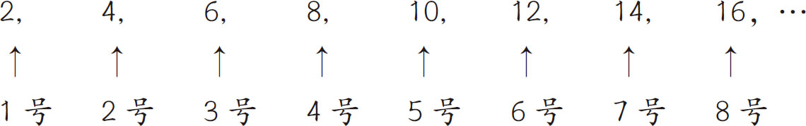
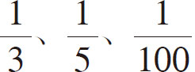
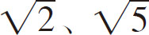
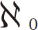
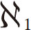

在本章中，我们了解了许多超级大的数。但是这些数都是有限数。事实上，还有许多比这些超级大的数更大的数。下面我们就来探究一下比古戈尔、香农数更大的“无限”。“无限”这个词给人的第一印象是不会输给任何人，然而事实并非如此。无限也分大小，如无限大和无限小。就像贵族（无限数）与平民（有限数）相比有很强的优越感，但是在皇室中，他们也分三六九等。
“无限”这个概念十分抽象，甚至很难让人联想到它有大小之分。例如，“偶数集”和“实数集”都有无限个元素，那么究竟哪个集合更大呢？我们一下子很难回答这个问题，接下来让我们一起来分析一下。方法很简单，关键在于能不能给集合中每个特定元素编号 。例如，对于“偶数集”，可以这样编号：

当然，集合中的元素有无限个，我们不可能一个一个数，必须制订一个编号规则 。如果将“偶数x ”用“x /2号”来表示，那么所有的偶数都将有自己的编号。可以通过制订编号来计数的无限集合被称为“可数无限集合 ”。“可数”按字面意思来理解就是“可以计数”。其他无限集合，如“奇数集”（1,3,5,7,…）,“整数集”（…，-2,-1,0,1,2,…）等，都可以通过一定的规则来编号，所以都是可数无限集合。
接下来我们看一下实数集。实数比自然数和整数的概念更广，它还包括小数，如1.3435443等。并且，类似π（圆周率）和e（自然常数）这种小数点后有无限位数的无理数也是实数。我们无法为实数集中的所有元素编号，因为无论多么相近的两个实数之间都有另一个实数。例如，3.14159265和3.14159266之间还有3.141592655等实数。像这种无法进行编号的无限集合被称为“不可数无限集合 ”。为了更严谨，我们可以用“康托对角线法”来证明不可数的无限，然而这是一个复杂的数学论证，这里就不深入展开了。
如果要比较“多少”的话，肯定是不可数无限集合中的元素多于可数无限集合 。因为不可数无限集合中的元素多到无法编号。最初发现无限集合有大小之分 的人是德国数学家康托 。
在第二章中，我们曾提到过实数分为有理数和无理数。有理数是可以用分数表示的数，并且分数○/△中的分子（○）和分母（△）都是整数。
既然有理数可以由整数（可数无限集合）组合而成，那么有理数集合应该属于可数无限集合。也就是说，虽然实数集合属于不可数无限集合，但它的子集，也就是有理数集合应该是可数无限集合。
那么无理数集合是一个怎样的概念呢？答案是：它是一个不可数无限集合。因为如果无理数集合是一个可数无限集合，那么它与有理数集合（可数无限集合）的集合（实数集合）也应该是可数无限集合。但实数集合是不可数无限集合，岂不是自相矛盾？由此可知，无理数集合一定是不可数无限集合。
提起有理数，我们脑海中浮现的是诸如

的一连串数，而提起无理数时，通常只有π、e、
等少数几个。所以根据直觉，我们不会觉得无理数比有理数多。而事实恰好相反。相对于有理数，无理数有不可数的无限多个，数量自然更多。这个与直觉完全不符的结果虽然让我们有些难以理解，但是从数学的角度来看，确实如此。无限集合有大小之分，却又是无限的，是不是有点难以理解？在数学世界中是以“宽松度 ”阐述“无限”的。我们知道，相邻偶数间不存在其他偶数。例如，2和4之间不存在其他偶数。同理，在自然数集合中也是如此，比如4和5之间不存在其他自然数。因此，这样的无限集合其实是分散的。
再来看一下实数集合。两个实数之间有无数个实数，密密麻麻地挤在一起。这样看是不是就比较容易理解无限集合的大小了？在数学中，这种“宽松度”用“基数
”一词表示，通常分为密集和稀疏两类。可数无限集合的基数表示为  
综上所述，用数学思维来解析“无限”，会发现各种各样不可思议的现象。下面给大家介绍一下数学家希尔伯特 提出的关于无限的“无限旅馆的悖论 ”。
假设一家旅馆拥有可数无限个房间，并且所有房间均已客满。此时有新的客人想入住该旅馆，如果你是旅馆经理，该如何处理呢？
如果房间数有限，并且当前已经满员的话，肯定无法接纳新客人。但是该旅馆拥有无限个房间，因此我们可以通过以下广播安排新客人入住：“各房间的客人请注意，为了确保新客人顺利入住，请大家移住到各自的下一号房间。”
于是，1号房的原客人换到了2号房，2号房的原客人去了3号房，依此类推，1号房就空下了，可以留给新客人。如果房间数有限，比如一共有100个房间，并且都有客人入住，那就不可能接待新客人了。但本例中的房间数是可数无限的，所以不愁没有房间给新客人。让100号房的客人住到101号房，1古戈尔普勒克斯号房的客人住到“1古戈尔普勒克斯＋1”号房。如果后续还有新客人来，我们都可以这样安排。虽然这在数学理论上是完全正确的，但由于违反了常理，所以被称为“悖论”。